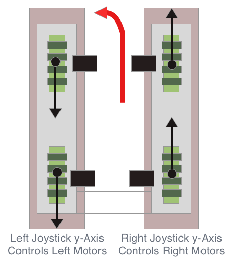

A Raspberry Pi Robot is a popular projects all over the internet and there are many blog posts on this subject. In this codelab, we will present the step by step instructions for building the Rasberry Pi Robot.
What you will learn in this codelab:
- Hardware and Software concepts of the Raspberry Pi, motor and motor controller
- Introduction to the Python programming language
- Sony Gamepad controller
- Program the robot using Python
Raspberry Pi is a low cost single board computer equipped with USB, ethernet, HDMI, audio, camera, and expansion ports. There are a few Raspberry Pi models.
- Raspberry Pi Zero
- Raspberry Pi 1 Model A+
- Raspberry Pi 2 Model B
- Raspberry Pi 3 Model B
- Raspberry Pi 4 Model B
In addition, Raspberry Pi model 3 & 4 are equipped with wifi and bluetooth. Please familiarize the model specification at Raspiberrypi.org.
We will be using the Raspberry Pi Model 3 for this build. You will need the following to boot up the Raspberry Pi.
- 1x Raspberry Pi 3 Model B
- 1x 8 GB or greater class 10 Micro SD Card
- USB keyboard and mouse
- 1x 5V 2A Micro USB power supply
- HDMI cable
- HDMI compatible monitor
Notes: If you don't have an HDMI input, but you have an DVI instead. You can get a HDMI to DVI adapter.
The following is a list of motor controller parts:
- 1x Motor controller
- 1x Chassis
- 1x Jumper Wires
- 1x 12 battery power pack
- 1x 5v battery power pack
Raspberry Pi supports a few operating systems. Raspbian is the recommended standard operating system for Raspberry Pi. In this step, we will create the SD card image with the Raspbian OS. To create the SD card image, we recommended the balenaEtcher. Download the following to your computer in a folder.
After the above software have been downloaded, install the balenaEther first onto your computer. Next, insert the micro SD card into the computer's USB port and launch balenaEther. When balenaEther opens, it is asking for the image to flash and for the destination SD card to flash the image onto. Click the ‘Select image' button to select the Raspbian Desktop OS image, and browse to the image from your folder. Next, click the ‘Select target' button, and browse to the SD card. Finally, click the ‘Flash' button to flash the image onto the SD card. Wait for the flash process to be completed.
When the flash process is completed, remove the micro SD card and insert into the Raspberry Pi SD card slot. Connect the USB keyboard and mouse, HDMI cable, and power cable to the Raspberry Pi. At this point, the Raspberry Pi should be bootting. When the booting processing is completed, you can view the Raspbian graphical desktop on the monitor. At this point, you have successuflly created the Raspbian OS image and booted the Raspberry Pi.
At the Raspbian Desktop, click on the Raspberry Pi desktop icon menu and select Preferences, then select Raspberry Pi Configuration. The Raspberry Pi Configuration utility will appear. Click the ‘Change Password...' button to change the password.
Next, enable the following configuration in the Interface tab of the Raspberry Pi configuraiton utility for the following:
- SSH
- SPI
- I2C
You might consider to configure the Wifi by connecting to your Wifi. Wifi can be configured via the Raspberry Pi task bar. Click on the Wifi icon to configure. You will need Internet connection to complete the upcoming steps.
Open your favorite browser and navigate to the Visual Studio Code download site. Choose the installation package for your operating system and download the installation package. Follow the download instruction and download the package into your directory of choice or your default download directory.
Once the Visual Studio Code installation package has been downloaded, double click on the installation package to install it. Follow the on screen installation instructions to install Visual Studio Code. Using the default installation settings is recommended.
Visual Studio Code provides many valuable extensions. These extensions help to increase your development productivity by providing all essential software development tools. The following extensions are recommended for Python development.
Before we can write the Python Hello World program, we need to make sure that Python is installed on the Raspberry Pi. Open a command prompt (from the Raspbian task bar) by clicking on the command prompt icon.
A new command prompt appears. At the command prompt, type.
python3 --version
If this command returns Python 3.x.x, then you have Python version 3 installed. Otherwise, install Python version by typing the following at the command prompt.
sudo apt install python3
This command installs Python version onto the Raspberry Pi. To verify that Python version 3 is properlly installed, type the python3 –version at the command prompt as instructed previously.
Now, we have Python install, we can create our Hello World program. At the command prompt, type python3. You will see an output similar to the following. The >>> is the Python prompt.
$ python3
Python 3.7.3 (default, Jul 25, 2020, 13:03:44)
[GCC 8.3.0] on Linux
Type "Help", "Copyright", "Credits" or "License" for more information.
>>>
At the Python prompt >>>, type the following.
>>>print('Hello World!')
Hello World
>>>
That is excellent! You have written your first Python program. This is the Python interactive environment for writing Python program. type Ctrl-D to exit the Python interactive environment. This is not the only way to write Python program. You can create a file call hello_world.py and put this line into the file.
print('Hello World')
To run this program at the Raspberry Pi, type the following and give it a try.
python3 hello_world.py
While writing Python using an text editor or Integrated Development Environment (IDE) like Visual Studio Code, Python enforces line formating. Python line structure is formatted using the tab indent format on multi-line Python program. The control structure is using the tab indent and colon to separte the programming path of the control statement. For example, the following if else control statement. Note the tab indent, and the colon in the line statement.
if (2 < 9):
print('2 is less than 9')
elif (2 > 1)
print('2 is greater than 1')
Python is a dynamic programming where a programming problem can be sub-divided into smaller sub-problems. Python supports object-oriented programming constructs. We can model the programming problem into classes. Like other object-oriented programming language, class allows us to encapsulate the data and only expose necessary interface to the class for other objects to communicate with.
This step is a minimal introduction of the Python programming language so that we can proceed to upcoming step for programming the Robot. For more advanced Python programming concepts, we recommend that you take an introuctory course in Python programming. Many online course providers have excellent Python course such as Udemy or Coursera.
In this step, we will wire the Raspberry Pi GPIO pins to the L298N motor controller, and battery and motors to the L298N motor controller. Prior to proceed in this step, ensure that you have the Pibot's motor, L298N motor controller and chassis are assembled. For Raspberry GPIO pin reference, you can open a terminal in the Raspbian and type ‘pinout'. This Raspberry pinout URL also provides interactive information about the pinout.
The diagram above shows the PiBot wiring, and the table below provides the detail of wiring. Physical pins are the actually the Raspberry Pi 40 pin connector pin number. You need to refer to the pin 1 orientation on the silk screen on the board. The GPIO pin are the Raspberry Pi pin out labels.
25 | 22 | ENA | Yellow |
23 | 16 | IN1 | White |
24 | 18 | IN2 | Gray |
27 | 13 | ENB | Blue |
17 | 11 | IN3 | Purple |
22 | 15 | IN4 | Green |
GND | 6 | GND | Black |
The PiBot drive train is a set of four fixed wheels. The motors are either moving forward or reverse. To turn left or right, the left motors and right motors are turning in their opposite directions. The following diagrams illustrate the Pibot tank drive. Tank drive is a type of drive train that is typically used on robots. There are other type drive trains for robots, and it is left to the reader to do the research to learn about them.
Forward
Reverse
Drive Left

Drive Right
The Sony Playstation 3 Gamepad is used in this project. It is Bluetooth wireless gamepad. The PS3 is six axis gamepad. The Pibot uses the left, right joysticks and the PS button to control the Pibot. Pushing both the left and right joysticks moves the Pibot forward, and pushing both the left and right joysticks moves the Pibot in reverse. Pushing the left and right in opposite direction to make left or right turns.
Bluetooth Pairing
We need to first to do the bluetooth pairing with the Raspberry Pi. Follow this PS3 Pairing to pair the PS3 controller. Note that this blog mentioned Jessie and Jessie Lite OS, but these steps work with the latest Buster Raspbian OS.
Now that we have the PiBot wiring completed and PS3 controller configured. In this step, we will create a Python program to operate the Pibot. The python RPi.GPIO package is already installed when you create the Raspbian Buster image. The Gamepad python package needs to be installed. Follow this blog post to clone the project. Gamepad. After the Gamepad repository is clone, create the pibot directory under your root folder.
mkdir ~/pibot
Copy Controllers.py and Gamepad.py from the Gamepad repository to the pibot folder and open the pibot folder with Visual Studio Code. In Visual Studio Code, create the following two files by using the New File button in the Visual Studio Code Explorer.
Robot.py
Motor.py
In Visual Studio Code, open the Motor.py file. At the top of the file, we need to import the RPi.GPIO. Type the following line. The Python import keyword ‘import' import the RPi.GPIO library that we can use in our code. The ‘as gpio' says that we can refer this library as gpio in our code.
import RPi.GPIO as gpio
Next, we are going to create the Motor class. In Visual Studio Code, open a two lines after the import statement. Type cl. After you type cl, the VSC intellisense dialog is opened. Scroll down and select class.
A new class is create with the name classname. Type Motor to change the class without moving your mouse. The class should look like this.
class Motor(object):
"""
docstring
"""
pass
Python block comment starts with the three quotes and end with three quotes on multiple lines. The text in between are comments. Single line comment starts with the three quotes and end with the three quotes on the same line. We use comments to document our code. So now that we have an empty Motor class. We need to define what this class should do for us. This Motor class responsibility is to initialize the GPIO pins connected to the L298N motor controller and provides methods to drive and to stop the motor. We would like this class to handle either the left and right motors. To meet this requirement, we will have a constructor to take the forward, reverse, and pwm pins arguments. The pwm pin is for controlling speed. Below the class comment, add the following to define class member fields.
_forward = None
_reverse = None
_pwm = None
_pwmdrive = None
Add the constructor to the Motor class. The _pwmdrive variable is the GPIO's pwm object. PWM stands for Pulse Width Modulation. It is used to control the speed of the motors. GPIO uses software PWM to control the motors. In Python class, it is important to note that the self keyword. This keyboard is used to refer to class member fields or variables. In addition, class method first argument needs to include the self keyboard so that the method can reference the class variables.
""" constructor """
def __init__(self, forward, reverse, pmw):
super().__init__()
self._forward = forward
self._reverse = reverse
self._pwm = pmw
gpio.setup(self._forward, gpio.OUT)
gpio.setup(self._reverse, gpio.OUT)
gpio.setup(self._pwm, gpio.OUT)
gpio.output(self._forward, gpio.LOW)
gpio.output(self._reverse, gpio.LOW)
self._pwmdrive = gpio.PWM(self._pwm, 100)
Next, we need a drive and a stop methods. When we receive joystick inputs from the PS3 controller, the values are between -1 to 1. The max forward value is -1, and max reverse value is 1. In the constructor, we assigned the value of 100 to the frequency parameter. This frequency parameter is used to control the speed of the motors. You can google to learn more about PWM.
def drive(self, speed):
drivespeed = speed*100
if (speed < 0):
gpio.output(self._forward, gpio.HIGH)
gpio.output(self._reverse, gpio.LOW)
drivespeed = -(speed*100)
else:
gpio.output(self._forward, gpio.LOW)
gpio.output(self._reverse, gpio.HIGH)
#print(f'input speed = {speed:.2f} driver speed {drivespeed:.2f}')
self._pwmdrive.start(drivespeed)
def stop(self):
gpio.output(self._forward, gpio.LOW)
gpio.output(self._reverse, gpio.LOW)
In the drive method, we control the forward or reverse direction using the input speed. If the speed is negative, we programmed the forward pin to high, and the reverse pin to low. If the speed is positive, we programmed the forward pin to low, and the reverse pin to high. These voltage levels are required by the L298N motor controller to control the motor directions. When the forward and reverse are low, the motors are stopped.
Now, that we have completed the Motor class. We need to use it in the Robot class. The Robot class's responsibility is to instantiate the corresponding instances of the Motor class, and the instance of the Gamepad class. It also initialize the Gamepad instance and setup the background processing of the Gamepad instance to receive inputs. The Robot run method is used to poll the Gamepad inputs and sends the speed input to the Motor class instances. There are two other helper methods to process Gamepad button input and Gamepad connection.
Open the Robot.py in Visual Studio Code, and follow the instructions above to create a class using Visual Studio Intellisense. Modify the classname to Robot. In the Robot class, we need to define the GPIO pin and Gamepad definitions. Add the following after the class comments.
# GPIO PIN definitions
LEFT_MOTOR_FORWARD = 17 # physical pin 11
LEFT_MOTOR_REVERSE = 22 # physical pin 15
LEFT_MOTOR_PWM = 25 # physical pin 22
RIGHT_MOTOR_FORWARD = 23 # physical pin 16
RIGHT_MOTOR_REVERSE = 24 # physical pin 18
RIGHT_MOTOR_PWM = 27 # physical pin 13
# Gamepad constants
BUTTON_EXIT = 'PS'
BUTTON_LEFT_1 = 'L1'
AXIS_LEFT_Y = 'LEFT-Y'
AXIS_RIGHT_Y = 'RIGHT-Y'
The Robot class constructor initialize the GPIO library and creates the left and right motor instances. We are using the GPIO.BCM or Broadcom General Purpose Input/Output pins. GPIO.Board is the physical pin mapping and as you see the comment in the definitions, we are not using the physical pin mapping. We also needs to define class variables for these initialization. After that, we can add the constructor to the Robot class.
Robot Class variables:
_running = True
_leftmotor = None
_rightmotor = None
_gamepadType = Gamepad.PS3
_gamepad = None
_pollingInterval = 0.5
Robot Class constructor:
def __init__(self):
super().__init__()
gpio.setmode(gpio.BCM)
gpio.setwarnings(False)
self._leftmotor = Motor(self.LEFT_MOTOR_FORWARD, self.LEFT_MOTOR_REVERSE, self.LEFT_MOTOR_PWM)
self._rightmotor = Motor(self.RIGHT_MOTOR_FORWARD, self.RIGHT_MOTOR_REVERSE, self.RIGHT_MOTOR_PWM)
Robot Class helper methods:
def checkGamePadConnection(self):
print('Please connect your gamepad...')
while not Gamepad.available():
time.sleep(1.0)
self._gamepad = self._gamepadType()
def onButtonExitPressed(self):
print('Exit Button Pressed\n')
self._running = False
Robot Class operational method:
def run(self):
self.checkGamePadConnection()
self._gamepad.startBackgroundUpdates()
self._gamepad.addButtonPressedHandler(self.BUTTON_EXIT, self.onButtonExitPressed)
try:
creep_factor = 1.0
while self._running and self._gamepad.isConnected():
# check creep mode
if (self._gamepad.beenPressed(self.BUTTON_LEFT_1)):
creep_factor = 0.2
#print('L1 Button pressed {creep_factor:.2f}')
elif (self._gamepad.beenReleased(self.BUTTON_LEFT_1)):
creep_factor = 1
#print('L1 Button released {creep_factor:.2f}')
# get the axis speed
leftAxisSpeed = self._gamepad.axis(self.AXIS_LEFT_Y)
rightAxisSpeed = self._gamepad.axis(self.AXIS_RIGHT_Y)
self._leftmotor.drive(leftAxisSpeed*creep_factor)
self._rightmotor.drive(-rightAxisSpeed*creep_factor)
time.sleep(self._pollingInterval)
except RuntimeError as error:
print(error)
finally:
self._gamepad.disconnect()
gpio.cleanup()
In the run method, we check for the LEFT button press on the gamepad. We use this button to turn on the creep mode. Finally, we need a program entry point to start the Robot. In this main entry point, we create the Robot class instance and call the run method.
#==============================================================================
# Robot main - start of the Robot program
#==============================================================================
if __name__ == "__main__":
print("Robot Start!")
robot = Robot()
robot.run()
That is it, when you type the following in the Raspberry Pi's terminal, the Pibot should run. A note of caution, make sure that you have raised the Pibot off the surface, otherwise, will run off where ever it might be. You can also run this program in Visual Studio Code. We will cover that in the next step.
We have covered basic Python object-oriented programming when we created the Motor and Robot classes. We like to encourage you to find additional reading materials on this topic to further your understanding of Python Object-Oriented programming concepts.
Visual Studio Code is a versatile editor. It is a development environment which has a text editor, but it also incorporate many development features like debugging code and source code management like git. Git is integrated in Visual Studio, and it is the third icon down on the vertical button bar. To debug a Python file, all we have to do is open it in the editor. Click the Run icon on the vertical button bar or Ctrl+Shift+D. It open the Run panel. Click the Run and Debug button to start debugging. You can set breakpoint in the Python source code by placing the mouse pointer to the beginning of the line of code that you want to set breakpoint to. A red dot will appear. Click on the read dot to set the breakpoint. When you click the Run and Debug button, the Visual Studio Code command bar will popup, select Python File to debug.
You can also create the launch.json file to customize the debugging experience. Click the ‘create a launch.json file' link to create this file. When you click this link, it will download the necessary package for debugging and generate the file.

In addition to using Visual Studio Code to debug Python code, we use the Python print statement to output debug information to the console. After the launch.json has been create, the next time when you want to start the debug session, just click the Run icon to start the session.
After we are happy with the PiBot Python code, and we can control the Pibot via the gamepad, we want to have our Python program to start automatically when the Raspberry Pi boot. The reason that we want to do is is that when we are driving the Pibot, there are no screen, keyboard or mouse connected. We can't start the Python program in this environment. There are multiple method to start a program upon boot. We are using sysvinit. In addition, we want to configure the Raspberry Pi only boot to console only. Run the Raspberry Pi configuration utility and select boot to CLI. First, we need to create a new file in Visual Studio Code and named it pibot.sh. Append the code below to this file.
#! /bin/sh
# /etc/init.d/pibot
### BEGIN INIT INFO
# Provides: pibot
# Required-Start: $remote_fs $syslog
# Required-Stop: $remote_fs $syslog
# Default-Start: 2 3 4 5
# Default-Stop: 0 1 6
# Description: A script to start the pibot python program on boot
### END INIT INFO
# If you want a command to always run, put it here
# Carry out specific functions when asked to by the system
case "$1" in
start)
echo "Starting pibot"
# run application you want to start
/usr/bin/python3 /home/pi/pibot/Robot.py
;;
stop)
echo "Stopping pibot"
# kill application you want to stop
pkill -f Robot.py
;;
*)
echo "Usage: /etc/init.d/pibot {start|stop}"
exit 1
;;
esac
exit 0
Next, we need to copy this script to /etc/init.d/ folder and change the permission to the file
sudo cp pibot.sh /etc/init.d
cd /etc/init.d
sudo chmod 755 pitbot.sh
To test starting the program:
sudo /etc/init.d/pibot start
To test stopping the program:
sudo /etc/init.d/pibot stop
Finally, we have to register the script to run at start-up:
sudo update-rc.d /etc/init.d/pibot.sh defaults
Power down the Raspberry Pi, and remove display, keyboard and mouse. Attached Raspberry Pi battery, and power on the L298N battery. Wait until the Pibot is fully started, then press the PS3's PS button. When the PS3 is connected, a single LED should be lit. You should be able to drive the Robot.